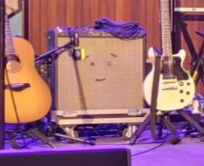

This page is where I am uploading reviews of live events I have attended
The most relaxed gig I've ever been to. Somerset House is a grand old house built in 1796 and the gig took place in the huge courtyard. The weather was brilliant so even though the gig was in the evening, it was still T-shirt temperature. The Big Moon don't have any bad songs and I was glad to hear Bonfire and Ladye Bay. I loved the Fat Boy Slim cover also, what a treat to hear Praise You!
Home